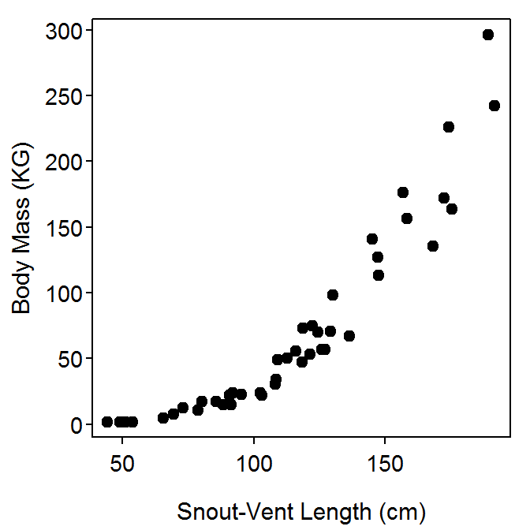

Getting The Data
> library(NCStats)
> setwd("C:/stats/")
> d <- read.csv("Alligators1.csv")
> str(d)
'data.frame': 44 obs. of 3 variables:
$ type: Factor w/ 2 levels "captive","wild": 2 2 2 2 2 2 2 2 2 2 ...
$ svl : num 192 175 172 168 147 ...
$ mass: num 242 164 172 135 114 ...
> headtail(d)
type svl mass
1 wild 191.6 242.2
2 wild 175.3 163.6
3 wild 172.4 172.2
42 captive 156.7 175.9
43 captive 174.3 226.1
44 captive 189.1 296.1
Bivariate EDA – Quantitative
> plot(mass~svl,data=d,xlab="Snout-Vent Length (cm)",ylab="Body Mass (KG)",pch=19)

> corr(mass~svl,data=d)
[1] 0.9126669
> corr(mass~svl,data=d,use="pairwise.complete.obs")
[1] 0.9126669
> plot(mass~svl,data=d,xlab="Snout-Vent Length (cm)",ylab="Body Mass (KG)",pch=19,col=type)
> legend("topleft",levels(d$type),pch=19,col=1:2,bty="n")